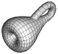
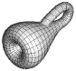

Preprints and Presentations

Preprints and Presentations

A white paper on Crystallographic Topology of Nanomaterials by Carroll K. Johnson.
Crystallographic Nanotechnology Research by Carroll K. Johnson was presented at the ACA Annual Meeting, Los Angeles, CA, July 21-26, 2001.
Crystallographic Groups, Groupoids, and Orbifolds was presented at a workshop on Orbifolds, Groupoids, and Their Applications at the University of Wales, Bangor September 11-17, 2000.
Postscript (133 K) DVI (40 K)
Crystallographic Topology 2: Overview and Work in Progress by Carroll K. Johnson, published in Trends in Mathematical Physics, AMS/IP Studies in Advanced Mathematics, edited by V. Alexiades and G. Siopsis, American Mathematical Society, Providence RI, and International Press, Cambridge MA, 1999. Proceedings of conference held October 14-17, 1998 at the University of Tennessee, Knoxville.
This overview describes an application of contemporary geometric topology and stochastic process concepts to structural crystallography. In this application, crystallographic groups become orbifolds, crystal structures become Morse functions on orbifolds, and vibrating atoms in a crystal become vector valued Gaussian measures with the Radon-Nikodym property. Intended crystallographic benefits include new methods for visualization of space groups and crystal structures, analysis of the thermal motion patterns seen in ORTEP drawings, and a classification scheme for crystal structures based on their Heegaard splitting properties.
Postscript (1924 K) PDF (671 K)
Crystallographic Groupoids: Past, Present, and Future by Carroll K. Johnson was presented at the ACA Annual Meeting, St. Paul, MN, July 22-27, 2000.
Groupoids: A Crystallographic Topology Perspective by Carroll K. Johnson was presented at the Groupoid Fest 99, Iowa City, IA, November 13-14, 1999.
Emerging Challenges in Computational Topology, Report of an NSF Funded Workshop, Miami Beach, FL, June 1999. (Eds. Marshall Bern and David Eppstein with 20 coauthors.)
Fundamental Group of a Euclidean 3-Orbifold by Carroll K. Johnson was presented at the ACA Annual Meeting, Buffalo, NY, May 22-27, 1999.
Heegaard Splitting of Critical Nets on Orbifolds by Carroll K. Johnson and Michael N. Burnett was presented at the ACA Annual Meeting, Washington, D.C., July 18-23, 1998. The slides for this talk are available as
Postscript (2231 K) PDF (247 K)
Thermal Ellipsoid Analysis: The Fossil Footprints of Restless Atoms by Carroll K. Johnson and Michael N. Burnett is the title of the triennial Buerger Award lecture at the American Crystallographic Association annual meeting in St. Louis, July 20-26, 1997. The slides for this lecture are available as
Postscript (681 K) PDF (214 K)
Crystallographic Topology and Its Applications by Carroll K. Johnson, Michael N. Burnett, and William D. Dunbar. This paper was presented at the IUCr sponsored Macromolecular Crystallography Computing School held at Western Washington University in Bellingham, Washington USA on August 17-23, 1996. Publication is scheduled for July 2000. It is a shortened, but enhanced, version of the Crystallographic Topology 101 tutorial.
The files below all contain this paper. They differ in the paper's format and compression method.
Uncompressed PostScript
Entire Paper
(3110 K)
First Half Only
(1523 K)
Second Half Only
(1598 K)
Gzipped PostScript
(requires gzip
to uncompress)
Entire Paper
(529 K)
First Half Only
(274 K)
Second Half Only
(258 K)
Stuffed
and Binhexed PostScript (764 K)
(requires stuffit expander
or equivalent on a Macintosh to uncompress)
Uncompressed
pdf (834 K)
Gzipped
pdf (672 K)
(requires gzip
to uncompress)
 Crystallographic Topology Home Page
Crystallographic Topology Home Page
Page last revised: